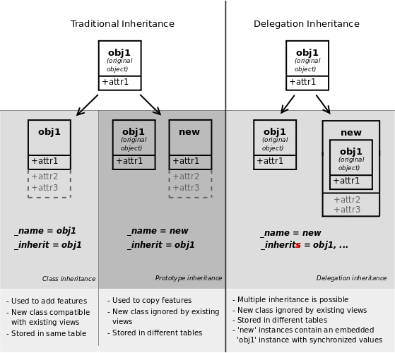

モジュールの構築¶
警告
このチュートリアルでは、 :ref:`Odoo のインストール <setup/install> ` が必要です。
Odoo サーバーの起動/停止¶
Odoo uses a client/server architecture in which clients are web browsers accessing the Odoo server via RPC.
Business logic and extension is generally performed on the server side, although supporting client features (e.g. new data representation such as interactive maps) can be added to the client.
In order to start the server, simply invoke the command odoo-bin in the shell, adding the full path to the file if necessary:
odoo-bin
The server is stopped by hitting Ctrl-C twice from the terminal, or by
killing the corresponding OS process.
Build an Odoo module¶
Both server and client extensions are packaged as modules which are optionally loaded in a database.
Odoo modules can either add brand new business logic to an Odoo system, or alter and extend existing business logic: a module can be created to add your country's accounting rules to Odoo's generic accounting support, while the next module adds support for real-time visualisation of a bus fleet.
Everything in Odoo thus starts and ends with modules.
モジュールの構造¶
An Odoo module can contain a number of elements:
- Business objects
Declared as Python classes, these resources are automatically persisted by Odoo based on their configuration
- オブジェクトビュー
Definition of business objects UI display
- Data files
XML or CSV files declaring the model metadata :
- ウェブコントローラ
Webブラウザからのリクエストを処理します。
- 静的Webデータ
Images, CSS or javascript files used by the web interface or website
モジュール構造¶
各モジュールは モジュールディレクトリ というディレクトリにあります。モジュールディレクトリは、 --addons-path オプションを使用して指定します。
ちなみに
most command-line options can also be set using a configuration file
Odoo モジュールは、 マニフェスト で宣言されます。
A module is also a
Python package
with a __init__.py file, containing import instructions for various Python
files in the module.
For instance, if the module has a single mymodule.py file __init__.py
might contain:
from . import mymodule
Odoo provides a mechanism to help set up a new module, odoo-bin has a subcommand scaffold to create an empty module:
$ odoo-bin scaffold <module name> <where to put it>
The command creates a subdirectory for your module, and automatically creates a bunch of standard files for a module. Most of them simply contain commented code or XML. The usage of most of those files will be explained along this tutorial.
Exercise
Module creation
Use the command line above to create an empty module Open Academy, and install it in Odoo.
Object-Relational Mapping¶
A key component of Odoo is the ORM layer. This layer avoids having to write most SQL by hand and provides extensibility and security services2.
Business objects are declared as Python classes extending
Model which integrates them into the automated
persistence system.
Models can be configured by setting a number of attributes at their
definition. The most important attribute is
_name which is required and defines the name for
the model in the Odoo system. Here is a minimally complete definition of a
model:
from odoo import models
class MinimalModel(models.Model):
_name = 'test.model'
Model fields¶
Fields are used to define what the model can store and where. Fields are defined as attributes on the model class:
from odoo import models, fields
class LessMinimalModel(models.Model):
_name = 'test.model2'
name = fields.Char()
Common Attributes¶
Much like the model itself, its fields can be configured, by passing configuration attributes as parameters:
name = fields.Char(required=True)
Some attributes are available on all fields, here are the most common ones:
string(unicode, default: field's name)The label of the field in UI (visible by users).
required(bool, default:False)If
True, the field can not be empty, it must either have a default value or always be given a value when creating a record.help(unicode, default:'')Long-form, provides a help tooltip to users in the UI.
index(bool, default:False)Requests that Odoo create a database index on the column.
Simple fields¶
There are two broad categories of fields: "simple" fields which are atomic values stored directly in the model's table and "relational" fields linking records (of the same model or of different models).
Reserved fields¶
Odoo creates a few fields in all models1. These fields are managed by the system and shouldn't be written to. They can be read if useful or necessary:
Special fields¶
By default, Odoo also requires a name field on all models for various
display and search behaviors. The field used for these purposes can be
overridden by setting _rec_name.
Exercise
Define a model
Define a new data model Course in the openacademy module. A course has a title and a description. Courses must have a title.
データファイル¶
Odoo is a highly data driven system. Although behavior is customized using Python code part of a module's value is in the data it sets up when loaded.
ちなみに
some modules exist solely to add data into Odoo
Module data is declared via data files, XML files with
<record> elements. Each <record> element creates or updates a database
record.
<odoo>
<record model="{model name}" id="{record identifier}">
<field name="{a field name}">{a value}</field>
</record>
</odoo>
modelis the name of the Odoo model for the record.idis an external identifier, it allows referring to the record (without having to know its in-database identifier).<field>elements have anamewhich is the name of the field in the model (e.g.description). Their body is the field's value.
Data files have to be declared in the manifest file to be loaded, they can
be declared in the 'data' list (always loaded) or in the 'demo' list
(only loaded in demonstration mode).
Exercise
Define demonstration data
Create demonstration data filling the Courses model with a few demonstration courses.
ちなみに
The content of the data files is only loaded when a module is installed or updated.
After making some changes, do not forget to use odoo-bin -u openacademy to save the changes to your database.
Basic views¶
Views define the way the records of a model are displayed. Each type of view represents a mode of visualization (a list of records, a graph of their aggregation, …). Views can either be requested generically via their type (e.g. a list of partners) or specifically via their id. For generic requests, the view with the correct type and the lowest priority will be used (so the lowest-priority view of each type is the default view for that type).
View inheritance allows altering views declared elsewhere (adding or removing content).
Generic view declaration¶
A view is declared as a record of the model ir.ui.view. The view type
is implied by the root element of the arch field:
<record model="ir.ui.view" id="view_id">
<field name="name">view.name</field>
<field name="model">object_name</field>
<field name="priority" eval="16"/>
<field name="arch" type="xml">
<!-- view content: <form>, <tree>, <graph>, ... -->
</field>
</record>
危険
The view's content is XML.
The arch field must thus be declared as type="xml" to be parsed
correctly.
Tree views¶
Tree views, also called list views, display records in a tabular form.
Their root element is <tree>. The simplest form of the tree view simply
lists all the fields to display in the table (each field as a column):
<tree string="Idea list">
<field name="name"/>
<field name="inventor_id"/>
</tree>
Form views¶
Forms are used to create and edit single records.
Their root element is <form>. They are composed of high-level structure
elements (groups, notebooks) and interactive elements (buttons and fields):
<form string="Idea form">
<group colspan="4">
<group colspan="2" col="2">
<separator string="General stuff" colspan="2"/>
<field name="name"/>
<field name="inventor_id"/>
</group>
<group colspan="2" col="2">
<separator string="Dates" colspan="2"/>
<field name="active"/>
<field name="invent_date" readonly="1"/>
</group>
<notebook colspan="4">
<page string="Description">
<field name="description" nolabel="1"/>
</page>
</notebook>
<field name="state"/>
</group>
</form>
Exercise
Customise form view using XML
Create your own form view for the Course object. Data displayed should be: the name and the description of the course.
Exercise
Notebooks
In the Course form view, put the description field under a tab, such that it will be easier to add other tabs later, containing additional information.
Form views can also use plain HTML for more flexible layouts:
<form string="Idea Form">
<header>
<button string="Confirm" type="object" name="action_confirm"
states="draft" class="oe_highlight" />
<button string="Mark as done" type="object" name="action_done"
states="confirmed" class="oe_highlight"/>
<button string="Reset to draft" type="object" name="action_draft"
states="confirmed,done" />
<field name="state" widget="statusbar"/>
</header>
<sheet>
<div class="oe_title">
<label for="name" class="oe_edit_only" string="Idea Name" />
<h1><field name="name" /></h1>
</div>
<separator string="General" colspan="2" />
<group colspan="2" col="2">
<field name="description" placeholder="Idea description..." />
</group>
</sheet>
</form>
Search views¶
Search views customize the search field associated with the list view (and
other aggregated views). Their root element is <search> and they're
composed of fields defining which fields can be searched on:
<search>
<field name="name"/>
<field name="inventor_id"/>
</search>
If no search view exists for the model, Odoo generates one which only allows
searching on the name field.
Exercise
Search courses
Allow searching for courses based on their title or their description.
Relations between models¶
A record from a model may be related to a record from another model. For instance, a sale order record is related to a client record that contains the client data; it is also related to its sale order line records.
Exercise
Create a session model
For the module Open Academy, we consider a model for sessions: a session is an occurrence of a course taught at a given time for a given audience.
Create a model for sessions. A session has a name, a start date, a duration and a number of seats. Add an action and a menu item to display them. Make the new model visible via a menu item.
Relational fields¶
Relational fields link records, either of the same model (hierarchies) or between different models.
Relational field types are:
Many2one(other_model, ondelete='set null')A simple link to an other object:
print(foo.other_id.name)
参考
One2many(other_model, related_field)A virtual relationship, inverse of a
Many2one. AOne2manybehaves as a container of records, accessing it results in a (possibly empty) set of records:for other in foo.other_ids: print(other.name)
Many2many(other_model)Bidirectional multiple relationship, any record on one side can be related to any number of records on the other side. Behaves as a container of records, accessing it also results in a possibly empty set of records:
for other in foo.other_ids: print(other.name)
Exercise
Many2one relations
Using a many2one, modify the Course and Session models to reflect their relation with other models:
A course has a responsible user; the value of that field is a record of the built-in model
res.users.A session has an instructor; the value of that field is a record of the built-in model
res.partner.A session is related to a course; the value of that field is a record of the model
openacademy.courseand is required.Adapt the views.
Exercise
Inverse one2many relations
Using the inverse relational field one2many, modify the models to reflect the relation between courses and sessions.
Exercise
Multiple many2many relations
Using the relational field many2many, modify the Session model to relate
every session to a set of attendees. Attendees will be represented by
partner records, so we will relate to the built-in model res.partner.
Adapt the views accordingly.
Inheritance¶
Model inheritance¶
Odoo provides two inheritance mechanisms to extend an existing model in a modular way.
The first inheritance mechanism allows a module to modify the behavior of a model defined in another module:
add fields to a model,
override the definition of fields on a model,
add constraints to a model,
add methods to a model,
override existing methods on a model.
The second inheritance mechanism (delegation) allows to link every record of a model to a record in a parent model, and provides transparent access to the fields of the parent record.
参考
_inherit_inherits
View inheritance¶
Instead of modifying existing views in place (by overwriting them), Odoo provides view inheritance where children "extension" views are applied on top of root views, and can add or remove content from their parent.
An extension view references its parent using the inherit_id field, and
instead of a single view its arch field is composed of any number of
xpath elements selecting and altering the content of their parent view:
<!-- improved idea categories list -->
<record id="idea_category_list2" model="ir.ui.view">
<field name="name">id.category.list2</field>
<field name="model">idea.category</field>
<field name="inherit_id" ref="id_category_list"/>
<field name="arch" type="xml">
<!-- find field description and add the field
idea_ids after it -->
<xpath expr="//field[@name='description']" position="after">
<field name="idea_ids" string="Number of ideas"/>
</xpath>
</field>
</record>
exprAn XPath expression selecting a single element in the parent view. Raises an error if it matches no element or more than one
positionOperation to apply to the matched element:
insideappends
xpath's body at the end of the matched elementreplacereplaces the matched element with the
xpath's body, replacing any$0node occurrence in the new body with the original elementbeforeinserts the
xpath's body as a sibling before the matched elementafterinserts the
xpaths's body as a sibling after the matched elementattributesalters the attributes of the matched element using special
attributeelements in thexpath's body
ちなみに
When matching a single element, the position attribute can be set directly
on the element to be found. Both inheritances below will give the same result.
<xpath expr="//field[@name='description']" position="after">
<field name="idea_ids" />
</xpath>
<field name="description" position="after">
<field name="idea_ids" />
</field>
Exercise
Alter existing content
Using model inheritance, modify the existing Partner model to add an
instructorboolean field, and a many2many field that corresponds to the session-partner relationUsing view inheritance, display this fields in the partner form view
Domains¶
In Odoo, Search domains are values that encode conditions on records. A domain is a list of criteria used to select a subset of a model's records. Each criteria is a triple with a field name, an operator and a value.
For instance, when used on the Product model the following domain selects all services with a unit price over 1000:
[('product_type', '=', 'service'), ('unit_price', '>', 1000)]
By default criteria are combined with an implicit AND. The logical operators
& (AND), | (OR) and ! (NOT) can be used to explicitly combine
criteria. They are used in prefix position (the operator is inserted before
its arguments rather than between). For instance to select products "which are
services OR have a unit price which is NOT between 1000 and 2000":
['|',
('product_type', '=', 'service'),
'!', '&',
('unit_price', '>=', 1000),
('unit_price', '<', 2000)]
A domain parameter can be added to relational fields to limit valid
records for the relation when trying to select records in the client interface.
Exercise
Domains on relational fields
When selecting the instructor for a Session, only instructors (partners
with instructor set to True) should be visible.
Exercise
More complex domains
Create new partner categories Teacher / Level 1 and Teacher / Level 2. The instructor for a session can be either an instructor or a teacher (of any level).
Computed fields and default values¶
So far fields have been stored directly in and retrieved directly from the database. Fields can also be computed. In that case, the field's value is not retrieved from the database but computed on-the-fly by calling a method of the model.
To create a computed field, create a field and set its attribute
compute to the name of a method. The computation
method should simply set the value of the field to compute on every record in
self.
危険
self is a collection
The object self is a recordset, i.e., an ordered collection of
records. It supports the standard Python operations on collections, like
len(self) and iter(self), plus extra set operations like recs1 +
recs2.
Iterating over self gives the records one by one, where each record is
itself a collection of size 1. You can access/assign fields on single
records by using the dot notation, like record.name.
import random
from odoo import models, fields, api
class ComputedModel(models.Model):
_name = 'test.computed'
name = fields.Char(compute='_compute_name')
def _compute_name(self):
for record in self:
record.name = str(random.randint(1, 1e6))
Dependencies¶
The value of a computed field usually depends on the values of other fields on
the computed record. The ORM expects the developer to specify those dependencies
on the compute method with the decorator depends().
The given dependencies are used by the ORM to trigger the recomputation of the
field whenever some of its dependencies have been modified:
from odoo import models, fields, api
class ComputedModel(models.Model):
_name = 'test.computed'
name = fields.Char(compute='_compute_name')
value = fields.Integer()
@api.depends('value')
def _compute_name(self):
for record in self:
record.name = "Record with value %s" % record.value
Exercise
Computed fields
Add the percentage of taken seats to the Session model
Display that field in the tree and form views
Display the field as a progress bar
Default values¶
Any field can be given a default value. In the field definition, add the option
default=X where X is either a Python literal value (boolean, integer,
float, string), or a function taking a recordset and returning a value:
name = fields.Char(default="Unknown")
user_id = fields.Many2one('res.users', default=lambda self: self.env.user)
注釈
The object self.env gives access to request parameters and other useful
things:
self.env.crorself._cris the database cursor object; it is used for querying the databaseself.env.uidorself._uidis the current user's database idself.env.useris the current user's recordself.env.contextorself._contextis the context dictionaryself.env.ref(xml_id)returns the record corresponding to an XML idself.env[model_name]returns an instance of the given model
Exercise
Active objects – Default values
Define the start_date default value as today (see
Date).Add a field
activein the class Session, and set sessions as active by default.
Onchange¶
The "onchange" mechanism provides a way for the client interface to update a form whenever the user has filled in a value in a field, without saving anything to the database.
For instance, suppose a model has three fields amount, unit_price and
price, and you want to update the price on the form when any of the other
fields is modified. To achieve this, define a method where self represents
the record in the form view, and decorate it with onchange()
to specify on which field it has to be triggered. Any change you make on
self will be reflected on the form.
<!-- content of form view -->
<field name="amount"/>
<field name="unit_price"/>
<field name="price" readonly="1"/>
# onchange handler
@api.onchange('amount', 'unit_price')
def _onchange_price(self):
# set auto-changing field
self.price = self.amount * self.unit_price
# Can optionally return a warning and domains
return {
'warning': {
'title': "Something bad happened",
'message': "It was very bad indeed",
}
}
For computed fields, valued onchange behavior is built-in as can be seen by
playing with the Session form: change the number of seats or participants, and
the taken_seats progressbar is automatically updated.
Exercise
Warning
Add an explicit onchange to warn about invalid values, like a negative number of seats, or more participants than seats.
Model constraints¶
Odoo provides two ways to set up automatically verified invariants:
Python constraints and
SQL constraints.
A Python constraint is defined as a method decorated with
constrains(), and invoked on a recordset. The decorator
specifies which fields are involved in the constraint, so that the constraint is
automatically evaluated when one of them is modified. The method is expected to
raise an exception if its invariant is not satisfied:
from odoo.exceptions import ValidationError
@api.constrains('age')
def _check_something(self):
for record in self:
if record.age > 20:
raise ValidationError("Your record is too old: %s" % record.age)
# all records passed the test, don't return anything
Exercise
Add Python constraints
Add a constraint that checks that the instructor is not present in the attendees of his/her own session.
SQL constraints are defined through the model attribute
_sql_constraints. The latter is assigned to a list
of triples of strings (name, sql_definition, message), where name is a
valid SQL constraint name, sql_definition is a table_constraint expression,
and message is the error message.
Exercise
Add SQL constraints
With the help of PostgreSQL's documentation , add the following constraints:
CHECK that the course description and the course title are different
Make the Course's name UNIQUE
Exercise
Exercise 6 - Add a duplicate option
Since we added a constraint for the Course name uniqueness, it is not possible to use the "duplicate" function anymore ().
Re-implement your own "copy" method which allows to duplicate the Course object, changing the original name into "Copy of [original name]".
アドバンスドビュー¶
Tree views¶
Tree views can take supplementary attributes to further customize their behavior:
decoration-{$name}allow changing the style of a row's text based on the corresponding record's attributes.
Values are Python expressions. For each record, the expression is evaluated with the record's attributes as context values and if
true, the corresponding style is applied to the row. Here are some of the other values available in the context:uid: the id of the current user,today: the current local date as a string of the formYYYY-MM-DD,now: same astodaywith the addition of the current time. This value is formatted asYYYY-MM-DD hh:mm:ss.
{$name}can bebf(font-weight: bold),it(font-style: italic), or any bootstrap contextual color (danger,info,muted,primary,successorwarning).<tree string="Idea Categories" decoration-info="state=='draft'" decoration-danger="state=='trashed'"> <field name="name"/> <field name="state"/> </tree>
editableEither
"top"or"bottom". Makes the tree view editable in-place (rather than having to go through the form view), the value is the position where new rows appear.
Exercise
List coloring
Modify the Session tree view in such a way that sessions lasting less than 5 days are colored blue, and the ones lasting more than 15 days are colored red.
Calendars¶
Displays records as calendar events. Their root element is <calendar> and
their most common attributes are:
colorThe name of the field used for color segmentation. Colors are automatically distributed to events, but events in the same color segment (records which have the same value for their
@colorfield) will be given the same color.date_startrecord's field holding the start date/time for the event
date_stop(optional)record's field holding the end date/time for the event
stringrecord's field to define the label for each calendar event
<calendar string="Ideas" date_start="invent_date" color="inventor_id">
<field name="name"/>
</calendar>
Exercise
Calendar view
Add a Calendar view to the Session model enabling the user to view the events associated to the Open Academy.
Search views¶
Search view <field> elements can have a @filter_domain that overrides
the domain generated for searching on the given field. In the given domain,
self represents the value entered by the user. In the example below, it is
used to search on both fields name and description.
Search views can also contain <filter> elements, which act as toggles for
predefined searches. Filters must have one of the following attributes:
domainadd the given domain to the current search
contextadd some context to the current search; use the key
group_byto group results on the given field name
<search string="Ideas">
<field name="name"/>
<field name="description" string="Name and description"
filter_domain="['|', ('name', 'ilike', self), ('description', 'ilike', self)]"/>
<field name="inventor_id"/>
<field name="country_id" widget="selection"/>
<filter name="my_ideas" string="My Ideas"
domain="[('inventor_id', '=', uid)]"/>
<group string="Group By">
<filter name="group_by_inventor" string="Inventor"
context="{'group_by': 'inventor_id'}"/>
</group>
</search>
To use a non-default search view in an action, it should be linked using the
search_view_id field of the action record.
The action can also set default values for search fields through its
context field: context keys of the form
search_default_field_name will initialize field_name with the
provided value. Search filters must have an optional @name to have a
default and behave as booleans (they can only be enabled by default).
Exercise
Search views
Add a button to filter the courses for which the current user is the responsible in the course search view. Make it selected by default.
Add a button to group courses by responsible user.
Gantt¶
警告
The gantt view requires the web_gantt module which is present in the enterprise edition version.
Horizontal bar charts typically used to show project planning and advancement,
their root element is <gantt>.
<gantt string="Ideas"
date_start="invent_date"
date_stop="date_finished"
progress="progress"
default_group_by="inventor_id" />
Exercise
Gantt charts
Add a Gantt Chart enabling the user to view the sessions scheduling linked to the Open Academy module. The sessions should be grouped by instructor.
Graph views¶
Graph views allow aggregated overview and analysis of models, their root
element is <graph>.
注釈
Pivot views (element <pivot>) a multidimensional table, allows the
selection of filers and dimensions to get the right aggregated dataset
before moving to a more graphical overview. The pivot view shares the same
content definition as graph views.
Graph views have 4 display modes, the default mode is selected using the
@type attribute.
- Bar (default)
a bar chart, the first dimension is used to define groups on the horizontal axis, other dimensions define aggregated bars within each group.
By default bars are side-by-side, they can be stacked by using
@stacked="True"on the<graph>- Line
2-dimensional line chart
- Pie
2-dimensional pie
Graph views contain <field> with a mandatory @type attribute taking
the values:
row(default)the field should be aggregated by default
measurethe field should be aggregated rather than grouped on
<graph string="Total idea score by Inventor">
<field name="inventor_id"/>
<field name="score" type="measure"/>
</graph>
警告
Graph views perform aggregations on database values, they do not work with non-stored computed fields.
Exercise
Graph view
Add a Graph view in the Session object that displays, for each course, the number of attendees under the form of a bar chart.
Kanban¶
Used to organize tasks, production processes, etc… their root element is
<kanban>.
A kanban view shows a set of cards possibly grouped in columns. Each card represents a record, and each column the values of an aggregation field.
For instance, project tasks may be organized by stage (each column is a stage), or by responsible (each column is a user), and so on.
Kanban views define the structure of each card as a mix of form elements (including basic HTML) and QWeb Templates.
Exercise
Kanban view
Add a Kanban view that displays sessions grouped by course (columns are thus courses).
Security¶
Access control mechanisms must be configured to achieve a coherent security policy.
Group-based access control mechanisms¶
Groups are created as normal records on the model res.groups, and granted
menu access via menu definitions. However even without a menu, objects may
still be accessible indirectly, so actual object-level permissions (read,
write, create, unlink) must be defined for groups. They are usually inserted
via CSV files inside modules. It is also possible to restrict access to
specific fields on a view or object using the field's groups attribute.
Access rights¶
Access rights are defined as records of the model ir.model.access. Each
access right is associated to a model, a group (or no group for global
access), and a set of permissions: read, write, create, unlink. Such access
rights are usually created by a CSV file named after its model:
ir.model.access.csv.
id,name,model_id/id,group_id/id,perm_read,perm_write,perm_create,perm_unlink
access_idea_idea,idea.idea,model_idea_idea,base.group_user,1,1,1,0
access_idea_vote,idea.vote,model_idea_vote,base.group_user,1,1,1,0
Exercise
Add access control through the Odoo interface
Create a new user "John Smith". Then create a group "OpenAcademy / Session Read" with read access to the Session model.
Exercise
Add access control through data files in your module
Using data files,
Create a group OpenAcademy / Manager with full access to all OpenAcademy models
Make Session and Course readable by all users
Record rules¶
A record rule restricts the access rights to a subset of records of the given
model. A rule is a record of the model ir.rule, and is associated to a
model, a number of groups (many2many field), permissions to which the
restriction applies, and a domain. The domain specifies to which records the
access rights are limited.
Here is an example of a rule that prevents the deletion of leads that are not
in state cancel. Notice that the value of the field groups must follow
the same convention as the method write() of the ORM.
<record id="delete_cancelled_only" model="ir.rule">
<field name="name">Only cancelled leads may be deleted</field>
<field name="model_id" ref="crm.model_crm_lead"/>
<field name="groups" eval="[(4, ref('sales_team.group_sale_manager'))]"/>
<field name="perm_read" eval="0"/>
<field name="perm_write" eval="0"/>
<field name="perm_create" eval="0"/>
<field name="perm_unlink" eval="1" />
<field name="domain_force">[('state','=','cancel')]</field>
</record>
Exercise
Record rule
Add a record rule for the model Course and the group
"OpenAcademy / Manager", that restricts write and unlink accesses
to the responsible of a course. If a course has no responsible, all users
of the group must be able to modify it.
Wizards¶
Wizards describe interactive sessions with the user (or dialog boxes) through
dynamic forms. A wizard is simply a model that extends the class
TransientModel instead of
Model. The class
TransientModel extends Model
and reuse all its existing mechanisms, with the following particularities:
Wizard records are not meant to be persistent; they are automatically deleted from the database after a certain time. This is why they are called transient.
Wizard records may refer to regular records or wizard records through relational fields(many2one or many2many), but regular records cannot refer to wizard records through a many2one field.
We want to create a wizard that allow users to create attendees for a particular session, or for a list of sessions at once.
Exercise
Define the wizard
Create a wizard model with a many2one relationship with the Session model and a many2many relationship with the Partner model.
Launching wizards¶
Wizards are simply window actions with a target
field set to the value new, which opens the view
(usually a form) in a separate dialog. The
action may be triggered via a menu item, but is more generally triggered by a
button.
An other way to launch wizards is through the menu of
a tree or form view. This is done through the binding_model_id field of the
action. Setting this field will make the action appear on the views of the model
the action is "bound" to.
<record id="launch_the_wizard" model="ir.actions.act_window">
<field name="name">Launch the Wizard</field>
<field name="res_model">wizard.model.name</field>
<field name="view_mode">form</field>
<field name="target">new</field>
<field name="binding_model_id" ref="model_context_model_ref"/>
</record>
ちなみに
While wizards use regular views and buttons, normally clicking any button in
a form would first save the form then close the dialog. Because this is
often undesirable in wizards, a special attribute special="cancel" is
available which immediately closes the wizard without saving the form.
Exercise
Launch the wizard
Define a form view for the wizard.
Add the action to launch it in the context of the Session model.
Define a default value for the session field in the wizard; use the context parameter
self._contextto retrieve the current session.
Exercise
Register attendees
Add buttons to the wizard, and implement the corresponding method for adding the attendees to the given session.
Exercise
Register attendees to multiple sessions
Modify the wizard model so that attendees can be registered to multiple sessions.
Internationalization¶
Each module can provide its own translations within the i18n directory, by having files named LANG.po where LANG is the locale code for the language, or the language and country combination when they differ (e.g. pt.po or pt_BR.po). Translations will be loaded automatically by Odoo for all enabled languages. Developers always use English when creating a module, then export the module terms using Odoo's gettext POT export feature ( without specifying a language), to create the module template POT file, and then derive the translated PO files. Many IDE's have plugins or modes for editing and merging PO/POT files.
ちなみに
The Portable Object files generated by Odoo are published on Transifex, making it easy to translate the software.
|- idea/ # The module directory
|- i18n/ # Translation files
| - idea.pot # Translation Template (exported from Odoo)
| - fr.po # French translation
| - pt_BR.po # Brazilian Portuguese translation
| (...)
ちなみに
By default Odoo's POT export only extracts labels inside XML files or
inside field definitions in Python code, but any Python string can be
translated this way by surrounding it with the function odoo._()
(e.g. _("Label"))
Exercise
Translate a module
Choose a second language for your Odoo installation. Translate your module using the facilities provided by Odoo.
Reporting¶
Printed reports¶
Odoo uses a report engine based on QWeb Templates, Twitter Bootstrap and Wkhtmltopdf.
A report is a combination two elements:
an
ir.actions.reportwhich configures various basic parameters for the report (default type, whether the report should be saved to the database after generation,…)<record id="account_invoices" model="ir.actions.report"> <field name="name">Invoices</field> <field name="model">account.invoice</field> <field name="report_type">qweb-pdf</field> <field name="report_name">account.report_invoice</field> <field name="report_file">account.report_invoice</field> <field name="attachment_use" eval="True"/> <field name="attachment">(object.state in ('open','paid')) and ('INV'+(object.number or '').replace('/','')+'.pdf')</field> <field name="binding_model_id" ref="model_account_invoice"/> <field name="binding_type">report</field> </record>
ちなみに
Because it largerly a standard action, as with Wizards it is generally useful to add the report as a contextual item on the tree and / or form views of the model being reported on via the
binding_model_idfield.Here we are also using
binding_typein order for the report to be in the report contextual menu rather than the action one. There is no technical difference but putting elements in the right place helps users.A standard QWeb view for the actual report:
<t t-call="web.html_container"> <t t-foreach="docs" t-as="o"> <t t-call="web.external_layout"> <div class="page"> <h2>Report title</h2> </div> </t> </t> </t>
the standard rendering context provides a number of elements, the most important being:
docsthe records for which the report is printed
userthe user printing the report
Because reports are standard web pages, they are available through a URL and
output parameters can be manipulated through this URL, for instance the HTML
version of the Invoice report is available through
http://localhost:8069/report/html/account.report_invoice/1 (if account is
installed) and the PDF version through
http://localhost:8069/report/pdf/account.report_invoice/1.
危険
If it appears that your PDF report is missing the styles (i.e. the text appears but the style/layout is different from the html version), probably your wkhtmltopdf process cannot reach your web server to download them.
If you check your server logs and see that the CSS styles are not being downloaded when generating a PDF report, most surely this is the problem.
The wkhtmltopdf process will use the web.base.url system parameter as
the root path to all linked files, but this parameter is automatically
updated each time the Administrator is logged in. If your server resides
behind some kind of proxy, that could not be reachable. You can fix this by
adding one of these system parameters:
report.url, pointing to an URL reachable from your server (probablyhttp://localhost:8069or something similar). It will be used for this particular purpose only.web.base.url.freeze, when set toTrue, will stop the automatic updates toweb.base.url.
Exercise
Create a report for the Session model
For each session, it should display session's name, its start and end, and list the session's attendees.
Dashboards¶
Exercise
Define a Dashboard
Define a dashboard containing the graph view you created, the sessions calendar view and a list view of the courses (switchable to a form view). This dashboard should be available through a menuitem in the menu, and automatically displayed in the web client when the OpenAcademy main menu is selected.
- 1
it is possible to disable the automatic creation of some fields
- 2
writing raw SQL queries is possible, but requires care as it bypasses all Odoo authentication and security mechanisms.